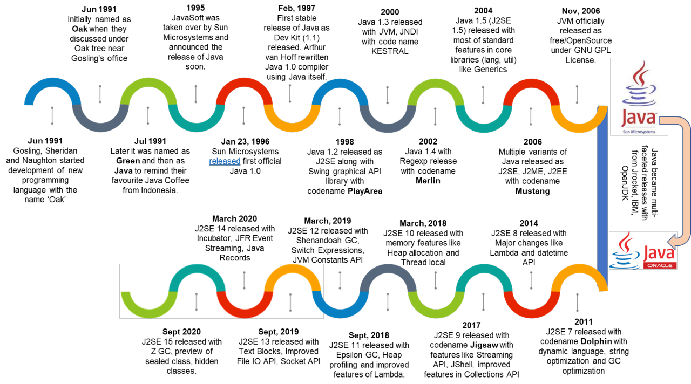

Sobre Java
História
Java foi criada pela Sun Microsystems no início dos anos 1990 e lançada em 1995. Desde então, evoluiu com versões regulares e amplo suporte da comunidade.
Exemplo simples
Exemplo de um programa "Hello World" em Java:
public class Hello {
public static void main(String[] args) {
System.out.println("Hello, World!");
}
}Por que aprender Java?
Aprender Java abre portas para desenvolvimento backend, Android e sistemas corporativos. É também uma excelente base para entender princípios de OO.